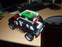
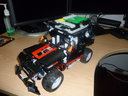
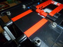
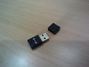
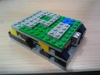
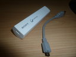

El pequeño tamaño de la Raspberry Pi y su capacidad de procesamiento abre muchas posibilidades para la robótica, dado que ahora podemos incorporar un completo computador en nuestros pequeños robots, dotándolos de la capacidad de procesamiento y comunicaciones que ofrecen los sistemas operativos modernos.
Este proyecto consiste en adaptar la Raspberry Pi a un vehículo Lego Technic (8081) y motorizado con Mindstorm, para luego programarlo y manejardo por una aplicación hecha en Python.
En otros posts he mostrado como construir robots y como programarlos ocontrolarlos desde dispositivos móviles. Sin embargo una de mis expectativas es poder conectarme vía SSH a los robots y controlar todas sus funciones internas remotamente. Esto implicaría que nuestro robot incluyera un computador corriendo un sistema operativo más completo que el que proporciona el NXT. Esto ahora lo puedo hacer, gracias a la Raspberry Pi. Este proyecto busca adaptar la Raspberry Pi a un vehículo Lego Technic (8081) y motorizado con Mindstorm y manejado por una aplicación hecha en Python, la cual podemos ejecutar y manejar vía SSH. Esta solución es mucho mas efectiva que la de usar una remolque para una netbook como en el experimento de “controlar un carro robot desde una Canaimita” de hace una par de años.
Aunque pudiéramos usar nuestro carro robot de propósito general para este proyecto, he disidido utilizar otro modelo de vehículo, el Extreme Cruise (8081)de Lego Technic que me llego hace poco (lo conseguí bastante barato en Madrid y un amigo me lo trajo). Este modelo de vehículo tiene varias ventajas como la amortiguación y el tamaño de las ruedas que lo convierten en una especie de “todo terreno”. Aunque no trae motores, si posee los mecanismos de dirección delantera y de tracción con diferencial. Con el mismo set se pueden armar dos modelos, aquí dejo las instrucciones (1, 2 y 3) para su ensamblado.
Queda +/- así, aunque no pretendo dejarlo así por mucho rato, la idea es incorporarle la capacidad de movimiento con motores.
He aquí donde se integran nuestro modelo 8081 con el Mindstorm. Esta tarea consistió esencialmente en incorporar dos motores, uno para la dirección y otro para la tracción. Este trabajo requirió hacer espacio, quitando el modelo de motor original y los asientos. Por ultimo amplié un poco la parte trasera levantando el techo para que entrara el bloque NXT.
Aquí algunas imágenes de como quedó:
Hasta este punto ya es posible manejar nuestro vehículo a control remoto, utilizando el Bluetooth del NXT desde aplicaciones Android en nuestra Smartphone o tableta tal como lo mencioné antes, sin embargo el objetivo de este proyecto es otro.
Ahora integraremos la Raspberry Pi con nuestro vehículo. Para esto usaremos unos pocos componentes. Junto con la Raspberry Pi necesitaremos:
Aquí podemos ver algunas imágenes:
|  |  |  |
|---|---|---|
|  |  |  |
Para controlar el NXT desde el Raspberry Pi debemos instalar en el, la librería nxt-python. Esta librería tiene un par de dependencias que deberemos instalar previamente, estas son PyUSB y PyBluez, que nos permitirán conectarnos al NXT ya sea por USB o por Bluetooth. para el momento de escribir esto, las últimas versiones eran nxt-python-2.2.2.tar.gz, pyusb-1.0.0a3.zip y PyBluez-0.18.tar.gz que una vez descargadas en un directorio temporal, creamos el grupo “lego” y como root, las podemos instalar así:
su -
cd path_al-dir_de_descarga/
groupadd lego
usermod -a -G lego
unzip pyusb-1.0.0a3.zip
cd pyusb-1.0.0a3
python setup.py install
cd ..
tar zxvf PyBluez-0.18.tar.gz
cd PyBluez-0.18
python setup.py install
cd ..
tar zxvf nxt-python-2.2.2.tar.gz
cd nxt-python-2.2.2
python setup.py installPara que el sistema identifique correctamente el dispositivonecesitamos agregar esta regla en el udev:
SUBSYSTEM=="usb", ATTRS{idVendor}=="0694", GROUP="lego", MODE="0660"Esta es la parte más interesante del proyecto. La mayoría de los lenguajes de programación de propósito especifico para el control del NXT lo modelan como una máquina de estados. Esta concepción facilita el manejo de la concurrencia propia del funcionamiento en paralelo de los efectores o del manejo de las interrupciones asociadas a los registro de los sensores. Sin embargo este no es el caso de los lenguajes de propósito general como C/C++ o Python.
La concurrencia en un lenguaje como Python puede ser modelada mediante el uso de hilos de ejecución (threads). Adicionalmente usaremos la librería nxt-python para el control del bloque NXT. Aquí podemos encontrar algunos ejemplos de como emplear esta librería. También dejo aquí el enlace a un buen tutorial de Python.
Este no fue el enfoque asumido en el proyecto de carro robot controlado por Python, porque no manejaba sensores y la interface era mucho más simple y se basaba en instrucción-acción.
Nuestro ejemplo consta de 3 tipos de funciones. Tenemos el programa principal, que inicializa las variables de estado, instancia las conexiones con el NXT y los hilos de ejecución que activan los efectores. Finalmente el programa principal contiene el ciclo de recepción y despacho de las instrucciones de entrada.
Las funciones tracción y dirección, son manejadas como hilos de ejecución paralela y se encargan de activar los efectores (motores) y controlar su velocidad. Debido a que es posible que se le vaya colocando más peso a nuestros robots, es preferible usar siempre la máxima potencia (100), de manera que el control de la velocidad de puede realizar por la activación intermitente de los motores, incrementando o reduciendo los espacios de tiempo de inactividad en función de reducir o aumentar la velocidad.
Por ultimo están las funciones que modifican las variables de estado de manera de variar el estado del sistema y de ejercer control sobre los efectores. Estas funciones son avanzar, retroceder, izquierda y derecha. Próximamente tendremos variables para la gestión de los sensores.
Aquí podemos ver el código de la aplicación en su primera versión (carro01.py)
#!/usr/bin/env python
import nxt.locator
from nxt.motor import *
import time
import thread
import consola_io
def menu():
print """
Menu de opciones
\----------------
1.- Derecha k
2.- Izquierda h
3.- Avanzar j
4.- Retroceder m
SP.- Mostrar menu
ESC.- Terminar s
"""
def derecha():
Direc[0] = -40
print "Derecha", Direc[0]
time.sleep(0.02)
Direc[0] = 0
def izquierda():
Direc[0] = 40
print "Izquierda", Direc[0]
time.sleep(0.02)
Direc[0] = 0
def avanzar():
if Trac[0] + Trac[1] <= MAXTRAC:
Trac[0] = Trac[0] + Trac[1]
print "Avanza ", Trac[0]
def retroceder():
if Trac[0] - Trac[1] >= -MAXTRAC:
Trac[0] = Trac[0] - Trac[1]
print "Retrocede ", Trac[0]
def detener():
motor_traccion = Motor(Brick, PORT_C)
Trac[0] = 0
motor_traccion.idle()
time.sleep(2)
def traccion(string,lock,*args):
veloc = Trac[0]
motor_traccion = Motor(Brick, PORT_C)
while 1:
if veloc != Trac[0]:
veloc = Trac[0]
if veloc == 0:
motor_traccion.idle()
print "Detener"
print string," Velocidad de traccion: ",veloc
if (veloc > 0):
motor_traccion.idle()
time.sleep((MAXTRAC - abs(veloc))/800.0)
motor_traccion.run(-MAXTRAC)
if (veloc < 0):
motor_traccion.idle()
time.sleep((MAXTRAC - abs(veloc))/800.0)
motor_traccion.run(MAXTRAC)
def direccion(string,lock,*args):
direcc = Direc[0]
motor_direccion = Motor(Brick, PORT_B)
while 1:
if direcc != Direc[0]:
direcc = Direc[0]
if direcc == 0:
motor_direccion.idle()
print " Detener ",string
if (direcc > 0):
motor_direccion.idle()
time.sleep((MAXDIREC - abs(direcc))/500.0)
motor_direccion.run(-MAXDIREC)
if (direcc < 0):
motor_direccion.idle()
time.sleep((MAXDIREC - abs(direcc))/500.0)
motor_direccion.run(MAXDIREC)
if __name__=="__main__":
Brick = nxt.locator.find_one_brick()
MAXTRAC = 120
MAXDIREC = 100
Direc = [0, 20]
Trac = [0, 20]
lock=thread.allocate_lock()
thread.start_new_thread(traccion,("Traccion",lock))
thread.start_new_thread(direccion,("Direccion",lock))
#-- Sacar menu()
menu()
#-- bucle principal
while 1:
#-- Leer tecla
c = consola_io.getkey()
#-- Procesar tecla
if c=='k':
derecha()
elif c=='h':
izquierda()
elif c=='j':
avanzar()
elif c=='m':
retroceder()
elif c=='n':
retroceder()
elif c==' ':
detener()
menu()
elif c=='s':
detener()
break #-- Salir del bucle
#-- Terminar
print "-- FIN --"Se ejecuta por consola, con lo que podemos acceder a nuestro robot vía SSH y controlar nuestro carro robot a distancia: Siempre que esté al alcance de nuestra red WiFi. Para esto empleé un router inalámbrico TPLink alimentado por la conexión USB de mi laptop. Con los que pude crear una pequeña red local inalámbrica itinerante. Luego configuré mi Raspberry Pi a esta red, de manera que cuando vuelva a arrancar (pero esta vez sin monitor y adherido al carro robot), pueda enlazare con esta red de forma automática. Aquí un pequeño video de su funcionamiento:
{kind=link}
{kind=link}
{kind=link}
{kind=link}
{kind=link}
{kind=link}
{kind=link}
{kind=link}
{kind=link}
{kind=link}
{kind=link}
{kind=link}
{kind=link}
{kind=link}